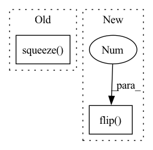

Pattern ID :3094
Before Change
fig, axes = plt.subplots(1, 1, figsize=(12, 4), squeeze=False)
ax = axes[0, 0]
im = ax.imshow(mean_bias.detach().squeeze() .cpu().numpy())
im.set_cmap(cmap=plt.cm.RdBu)
fig.colorbar(im, ax=ax)
ax.set_title("Mean bias [Kelvin]")After Change
init_condition = np.flip(init_condition.detach().cpu().numpy(), 2)
pred = inv_normalize(pred)
pred = np.flip(pred.detach().cpu().numpy(), 2)
gt = np.flip( gt.detach().cpu().numpy(), 2 )
bias = pred - gt // B, 1, 32, 64
mean_bias = np.mean(bias, axis=0)
all_mean_bias.append(mean_bias)
In pattern: SUPERPATTERN
Frequency: 3
Non-data size: 2
Instances Fragment ID: 11934802
Project Name: aditya-grover/climate-learn
Commit Name: da02a4f3496c35890c879f72c6b7502159d4b516
Time: 2023-02-21
Author: jason.jewik@ucla.edu
File Name: src/climate_learn/utils/visualize.py
M Class Name: AnonimousClass
N Class Name: AnonimousClass
M Method Name: visualize_mean_bias(3)
N Method Name: visualize_mean_bias(3)
M Parent Class:
N Parent Class:
M File Name: src/climate_learn/utils/visualize.py
N File Name: src/climate_learn/utils/visualize.py
M Start Line: 130
M End Line: 140
N Start Line: 132
N End Line: 146
Before Change
loss_b = F.binary_cross_entropy_with_logits(logits, batch["labels"].flip(0))
loss = lam * loss_a + (1 - lam) * loss_b
else:
logits = self.model(batch["images"]).squeeze( 1)
loss = F.binary_cross_entropy_with_logits(logits, batch["labels"])
return logits, loss
def training_step(self, batch: dict[str, torch.Tensor], idx: int) -> torch.Tensor:After Change
if self.training:
lam = abs(np.random.beta(0.2, 0.2) - 0.5) + 0.5
images = lam * images + (1 - lam) * images.flip(0)
labels = lam * labels + (1 - lam) * labels.flip(0 )
images = images + 0.1 * torch.randn_like(images[:1])
logits = self.model(images).squeeze(1) Fragment ID: 11934801
Project Name: affjljoo3581/g2net-detecting-continuous-gravitational-waves
Commit Name: 6de8c26173fa2deb162e6ab0c21dbb6c908ddf18
Time: 2022-12-29
Author: affjljoo3581@gmail.com
File Name: src/lightning.py
M Class Name: G2NetLightningModule
N Class Name: G2NetLightningModule
M Method Name: forward(3)
N Method Name: forward(2)
M Parent Class: LightningModule
N Parent Class: LightningModule
M File Name: src/lightning.py
N File Name: src/lightning.py
M Start Line: 29
M End Line: 41
N Start Line: 29
N End Line: 39
Before Change
for i, tensor in enumerate([init_condition, gt, pred, bias]):
ax = axes[index][i]
im = ax.imshow(tensor.detach().squeeze() .cpu().numpy())
im.set_cmap(cmap=plt.cm.RdBu)
fig.colorbar(im, ax=ax)
After Change
init_condition = np.flip(init_condition.detach().cpu().squeeze().numpy(), 0)
pred = inv_normalize(pred)
pred = np.flip(pred.detach().cpu().squeeze().numpy(), 0)
gt = np.flip( gt.detach().cpu().squeeze().numpy(), 0 )
bias = pred - gt
for i, np_array in enumerate([init_condition, gt, pred, bias]):
ax = axes[index][i] Fragment ID: 11934799
Project Name: aditya-grover/climate-learn
Commit Name: da02a4f3496c35890c879f72c6b7502159d4b516
Time: 2023-02-21
Author: jason.jewik@ucla.edu
File Name: src/climate_learn/utils/visualize.py
M Class Name: AnonimousClass
N Class Name: AnonimousClass
M Method Name: visualize(5)
N Method Name: visualize(5)
M Parent Class:
N Parent Class:
M File Name: src/climate_learn/utils/visualize.py
N File Name: src/climate_learn/utils/visualize.py
M Start Line: 74
M End Line: 76
N Start Line: 71
N End Line: 79